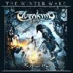

|
|
||
Elvenking : The Winter Wake (2006) |
|

http://www.elvenking.net |
1. Trows Kind 5:57 |
8.5/10 |
|
The winter wake es el título del tercer álbum del grupo italiano de folk metal, Elvenking. Tras un gran disco anterior, Wyrd, la banda lo ha tenido difícil para mantener el nivel tan alto, sobre todo cuando han recuperado a su cantante original, Damnagoras, en lugar de Kleid que hizo un gran trabajo en Wyrd. "Trows Kind" comienza rápido, potente y con el omnipresente violín que tanto caracteriza la música del grupo, aunque no impresiona demasiado para ser el arranque del disco. "Swallowtail" nos vuelve a traer el power metal tan particular de la banda, con el característico estilo folk, cambios de ritmo y algunos interesantes coros. Con un curioso sintetizador arranca "The winter wake", tema que incorpora algunas voces bastante ásperas, cortesía de Schmier de Destruction, un estribillo con coros bastante pegadizo y solos de violín y de guitarra. El ritmo se acelera bastante para lanzar "The wanderer", una canción con ritmos variados, atmósferas cambiantes, y un buen estribillo que no da respiro al oyente. En "March of fools" nos encontramos otra pieza rápida, acompañada por un cuarteto de cuerda, salpicada con melodiosos coros en el estribillo, y con una soprano en la parte central de la canción, retada por un gruñido masculino cercano al black metal. "On the morning dew" es un tema folk, acústico y de ritmo tranquilo, donde la voz de Damnagoras se ve acompañada por una dulce voz femenina. "Devil's carriage" nos devuelve de golpe al power metal rápido y sin concesiones, guitarra contundente sobre el doble bombo, voces frenéticas y un fantástico estribillo acompañado por coros. "Rats are following" comienza con la mezcla de violines y guitarras eléctricas marca de la casa, pero cambia luego a un estilo más directo y oscuro, que contrasta con el melodioso estribillo. Los teclados dan comienzo a "Rose your dream", aunque pronto toda la banda está cimentando un tema de power metal sólido, como siempre aderezado con los violines, que tiene el mejor estribillo del álbum, coros variados y el que quizás es el solo de guitarra más logrado del disco. Un comienzo de violín clásico para "Neverending nights", da paso a una canción de tempo que varía entre medio y rápido, de buena linea melódica y que tiene los coros más originales del disco y un llamativo estribillo. "Disillusion's reel" cierra el álbum en acústico, con una emocionante interpretación de Damnagoras, acompañado puntualmente por una soprano. En mi disco aparece como bonus una versión de un tema de Skyclad, "Penny dreadful", rápido, con cierto abuso de los ecos en la voz y que no puedo comparar con la versión original porque no la he escuchado. Indudablemente Elvenking ha conseguido lo que tantas otras bandas ya quisieran, que es un estilo propio de hacer power metal. Aunque este disco no es tan bueno como el anterior, la variedad en las canciones y la perfecta fusión del violín con las guitarras, que salpican con interesantes partes instrumentales casi todos los temas, consiguen que nos encontremos antre otro gran disco de esta banda italiana. |
||
- Crítica escrita por Rubén Béjar - |
||